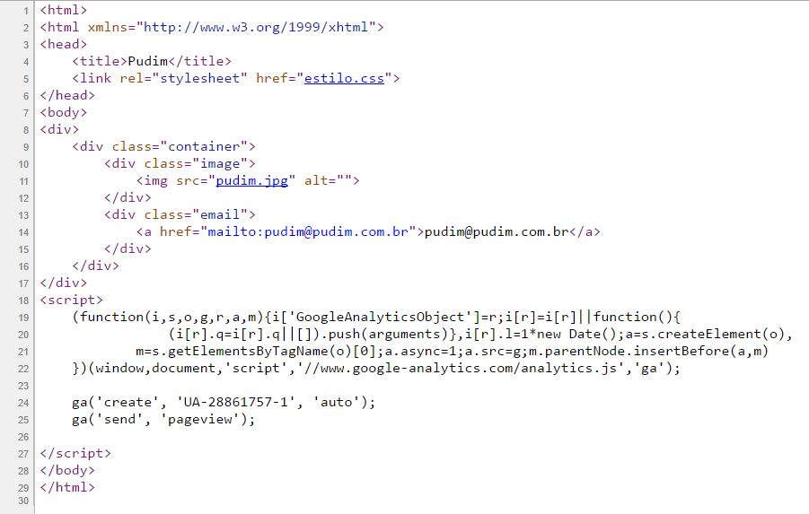
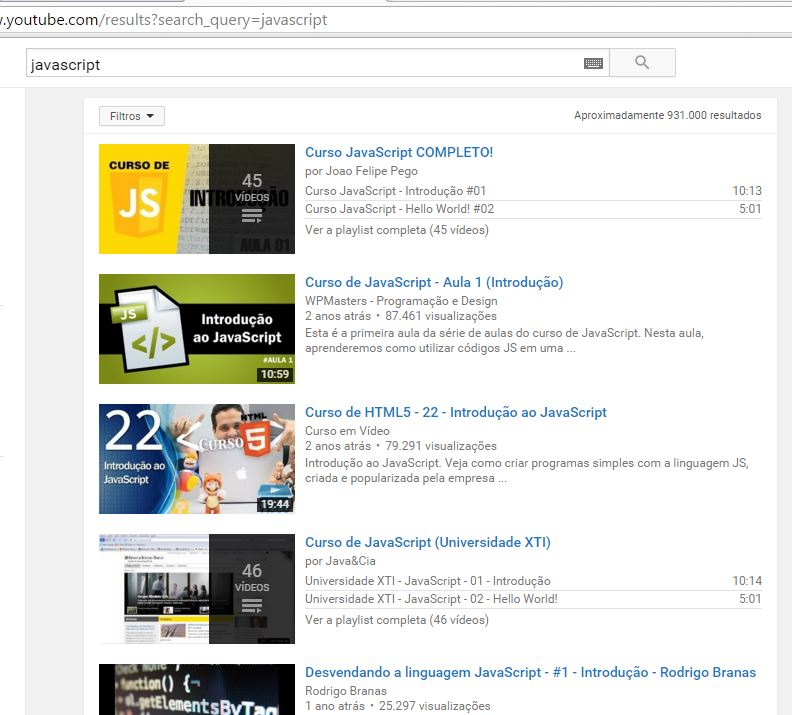

Desenvolvendo aplicações web
utilizando ferramentas atuais

com: Emerson Mellado / @EmersonMellado
Full Stack Developer
Como iniciar o desenvolvimento
de uma aplicação moderna com as ferramentas atuais
I go Horse. But try don't!

Vamos falar sobre abstração.
“A exploração eficaz do seu poder de abstração deve ser considerada como uma das atividades mais importantes de um programador competente” - Edsger Dijkstra
Abstração
substantivo feminino
1. Operação intelectual em que um objeto de reflexão é isolado de fatores que comumente lhe estão relacionados na realidade.
2. O resultado dessa operação (termo, ideia, concepção etc.); abstrato.
Exemplo de abstração
(1) uma publicação
(2) um jornal
(3) O Estadão
(4) a edição de 18 de fevereiro do Estadão
(5) a minha cópia da edição de 18 de fevereiro edição do Estadão
(6) a minha cópia da edição de 18 de fevereiro edição do Estadão como estava quando a peguei pela primeira vez (em contraste com como ficou a minha cópia poucos dias depois: na fogueira que fiz, queimando)

O que precisamos entender pra não passar aperto?
Quem veio primeiro?
O ovo ou a galinha?
O ovo ou a galinha?
O cliente ou o servidor? Ou foi a Arquitetura?
Quem sou Eu?
Emerson Mellado, prazer
Sou apaixonado por tecnologia, café e carpintaria...
Full Stack Developer
Full o quê?
Stack = Pilhas... sacou?

Arquitetura básica (muito básica) de um webApp moderno

Arquitetura básica (ainda básica) de um webApp moderno, mas vista do jeito certo.

MVW - Model - View - Whatever
Cliente - Servidor: O que cada um faz?
Cliente
Faz a requisição
 por exemplo: http://www.site.com.br
por exemplo: http://www.site.com.br
Servidor
Recebe a requisição
 Processa
Processa
Responde ao cliente
Tecnologias
Cliente
HTML, CSS, JavaScript, DHTML, VBScript, Applet, ActiveX , Flash
Servidor
CGI, SSI, Server API, ASP, JSP, PHP, COM/DCOM, CORBA,JavaScript
Show me the code!!
Bora ver um exemplo
Cliente - Javascript
function linkify( selector ) {
if( supports3DTransforms ) {
var nodes = document.querySelectorAll( selector );
for( var i = 0, len = nodes.length; i < len; i++ ) {
var node = nodes[i];
if( !node.className ) {
node.className += ' roll';
}
}
}
}
Servidor - Javascript
var Hapi = require('hapi'),
environment = require('./environment/environment.js'),
routes = require('./routes'),
db = require('./lib/db.js'),
server = new Hapi.Server();
server.connection({
host: environment.server.host,
port: environment.server.port,
routes: { cors: true}
});
server.views({
path: './src/public/templates',
engines: { html: require('handlebars') },
partialsPath: './src/public/templates/withPartials',
helpersPath: './src/public/templates/helpers'
});
Onde entra o trio tormento? HTML/CSS/javaScript? Eu sabia essa com laranjas
- HTML => View : Simples assim
- CSS => View : Simples assim
-
javaScript => View
Model
Controller
Whatever
: Simples assim, também
HTML
linguagem de marcação utilizada na construção de páginas na Web
Existe programador HTML?
E HTML 5?
HTML do pudim.com.br
E o CSS?
Não esse, a folha de estilos em cascataCSS - Folha de estilo em cascata
linguagem de folhas de estilo utilizada para definir a apresentação de documentos escritos em uma linguagem de marcação, como HTML ou XML
Acompanha o HTML, igual goiabada com queijo.
Alguém programa só em CSS?
éééé depende... vamos considerar os pre-processadores? Stylus, SaaS, Less
Exemplos:
Black -
White -
League -
Sky -
Beige -
Simple
Serif -
Blood -
Night -
Moon -
Solarized
=> Voltar ao normal
E esse tal de javaScript?
ES6
jQuery
AngularJS
javaScript não é Java
Es6 ou Es6/2015
ECMA Script - javaScript padrão da comunidade, alternativa ao JScript (M$)
- Escopos não serão mais tãooo confusos
- Novos tipos no parser: ex: const
- Diferenciação entre classes e functions com construtores
- Herança com suporte a super construtores super()
- Notação mais direta. ex: => e ${}
jQuery
- selectors... muitos selectors
- callbacks
- plugins... (my precious)
- a biblioteca mais usada e conhecida de javaScript
angular
- controllers
- rotas
- diretivas
- filtros
- injeção de dependência
- muitos exemplos e documentação
- idealizado pelo google
react
- mais coisas, menos código
- modificadores
- listeners
- muitos exemplos e documentação
- idealizado pelo facebook
Por onde começar?
nodeJs é um wrapper
wrapper é um empacotador, um grande programa com pequenos programas dentro.
seu principal objetivo é dar suporte a criação de aplicações escaláveis.
pode ser usado para desenvolvimento tanto backend quanto frontend.
acesse nodejs.org
baixe e instale o node
acesse npmjs.com
let happy = true
return
ES6 notation here, gotcha? :P
estude, Estude, ESTUDE!!!
até você conseguir melhorar o código abaixo
Function.prototype.applyAsync = function(params, cb){
var function_context = this;
setTimeout(function(){
var val = function_context.apply(undefined, params);
if(cb) cb(val);
}, 0);
}## Task Runner? Run to the hills?
grunt

gulp

- serve
- watch
- build
- clean
- style
- script
- inject
Isso é só Css "só que não"...
(Stylus, Sass, Less e Mixins)
Show me the code!!
Bora ver um exemplo
Versionar ou não versionar?
O que vocês acham?
Alguns versionadores GIT, SVN, TFS, Mercurial.
O que nao falamos?
- JSON
- Ajax
- Protocolos HTTP
- IDE / PLataformas
- StackOverflow
- GitHub
- Muito, muito mais...
Now I guess we're
running low on time
so...
One last bit
that the reverse process of currying
uncurrying
is closely related with
a more familiar concept
apply.
Lembre-se!
“Se você não tem dúvida é porque está mal informado” - Millôr Fernandes
Alguma dúvida?